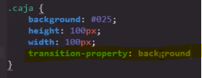
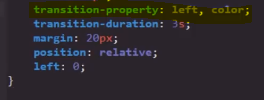
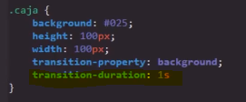
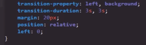
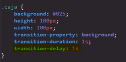

Transition
El efecto de esta propiedad es que permite visualizar los "fotogramas" que estan involucrados en los cambios o modificaciones que sufren los estilos, de modo que se pueda apreciar el proceso de los cambios ocurridos en estos.
Una caracteritica de las tranciciones es que se pueden aplicar a cualquier cambio ocurrido en las propiedades de los elementos, pero para que se ejecute debe de accionarse un evento.
Nota: esta propiedad debe aplicarse en el estilo del elemento en el que surtira efecto.
Propiedades obligatorias
Son aquellas propiedades sin las cuales las transiciones simplemete no funcionana, ya que estas definen aspectos esenciales de esta, por lo cual requiere que estas posean un valor:
Transition-property
-
El proposito de esta propiedad es definir a cual propiedad se aplicara la transición, para esto se ingresa el nombre de dicha propiedad como valor de Transition-property de la siguite manera.
Ejemplo

Una caracteritica de esta propiedad es que acepta el valor "all", el cual le indica al navegador que todos los cambios de todas las propiedades de la clase se les aplicara una transición, sin embargo este valor no es muy recomendable ya que inplica un gran consumo de recursos del dispositivo.
Otra posibilidad es definir más de una propiedad para que se le realise una transicón a la vez, esto se puede lograr simplemte con ingrasar el nombre de la segunda propiedad separado por una coma(,) del nombre de la primera.

Transition-duration
-
Esta propiedad define el tiempo que demorara la transición en completarse, por lo tanto los valores que acepta son segundos
Ejemplo

Esta proiedad junto con transition-property son las que permiten que las transiciones funcionene en un elemento.
Al igual que transition-property en esta propiedad se puede definir el tiempo de duración de más de una propiedad a la vez, simplemte se ingrese el seguno tiempo separado por una coma (,) del primero.

Tambien se puede aplicar un mismo tiempo para más de una propiedad, para esto simplemte se ingresa un unico tiempo en la propiedad, de ese modo este tiempo se generalizara y se aplicara todas las propiedades.
Propiedades complementarias
Transition-delay
-
Esta propiedad configura un retraso en la ejecuación de la transición, su función justamente esa demorar un poco el inicio de la transición, dicho "delay" se aplica tanto al ocurrir el cambio como al deshacerlo, es decir el "delay" se aplicara al poner los nuevos estilos como al quitarlos.
Ejemplo

Transition-timing-function
-
Esta propiedad define la forma en la que se llevara a cabo la transición, simplemete modifica el ritmo en la que esta se ejecutara, es decir dependiendo de su valor puede que el ritmo de la transición aumete o disminuya en algun punto de esta, sus valores posibles son:
-
Linear: La transición se desarrolla siempre a la misma velocidad
-
Ease: La transición empieza rapido y su velocidad disminuye a medida que termina
Nota: Este se trata del valor por defecto de la propiedad
-
Ease-in: Esta valor es el opuesto de ease la transición empieza despacio y termina rapido
-
Ease-out Este valor se asemeja mucho a ease pero no llega a alcanzar tanta velocidad, acelera y frena más lentamete
-
Ease-in-out La transición empieza despacio acelera y luego termina despacio
Nota: Esta propieda no modifica el tiempo de duración de la transición, eso es un rol exclusivo de la propiedad transition-duration